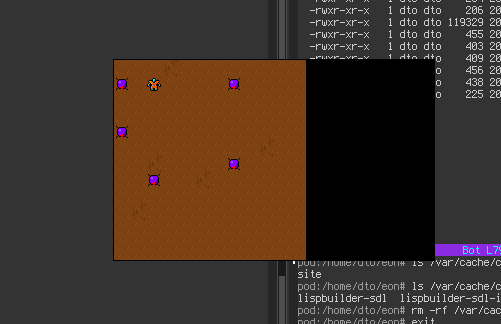
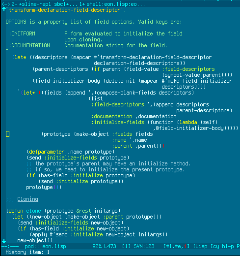
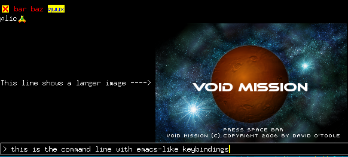

Void Mission theme song, and more updates
Screenshot of the SDL map renderer in the new Common Lisp port of RLX:

Potential album cover for our band project:
My new color-theme-schematic:

The SDL command prompt and output formatting engine at work. Also shows a sketch of the Void Mission splash screen:

There's also now a Void Mission theme song.